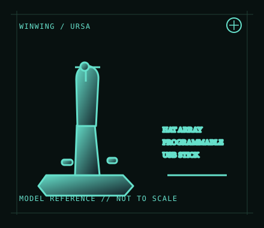

[ JOYSTICK CONTROLLERS // IDENTIFIED COMPONENT ]
WINWING URSA MINOR Fighter Joystick
PC flight stick with fighter-style grip controls and adjustable, configurable input through WINWING software.

MODEL IDENTIFICATION: WINWING URSA MINOR Fighter Joystick; left/right grip and package variants exist. Record the handedness and revision shown on the unit. Published family specifications may not establish the revision or condition of an individual unit; compare its label and included parts with the linked documentation.
Model specifications
| Catalog subcategory | Joystick controllers |
|---|---|
| Exact model / identifier | WINWING URSA MINOR Fighter Joystick; left/right grip and package variants exist. Record the handedness and revision shown on the unit. |
| Design and controls | Desktop/cockpit-oriented joystick with fighter-style trigger, hats and programmable grip inputs. The URSA MINOR line is sold in left- and right-hand configurations; do not assume the grips, controls or manuals are interchangeable. |
| Physical interface | Wired USB input to a Windows PC. Basic recognition and advanced configuration are separate; use the vendor’s current setup documents for the matching right- or left-hand variant. |
| Host compatibility | Windows PC flight simulation is the intended host. No official Xbox or PlayStation support is listed. Game compatibility depends on its support for standard USB axes and button input. |
| Driver and configuration | WINWING’s SimAppPro and download center provide the vendor configuration, firmware and manuals as applicable. Confirm the version and variant before updating firmware, calibrating or importing a profile. |
Setup and control mapping
Assign stick axes, trigger and grip hats in the target simulator after the vendor setup/calibration procedure. Confirm all axes reach their endpoints, verify button numbering, and save a profile specific to the host/game.
Before use, connect the device directly to the stated host, confirm it appears once in the operating system’s controller list, and test every axis and button. Keep host calibration separate from in-game dead-zone and sensitivity settings so later maintenance can reproduce the baseline.
Preservation and service notes
Keep the USB cable strain-relieved and the gimbal clear of dust. Note left/right variant, spring or tension configuration, firmware and calibration data; update only with the matching vendor package and stable power.
Revision caveat: URSA MINOR is a Windows PC flight-sim product, not a console joystick. Model/handedness options matter; use the matching manual instead of inferring compatibility from the family name.
For a physical archive entry, record the as-found label, serial/part number where present, accessories, host OS, driver or firmware version, and test method. Separate observed condition from published specifications.
References and support
- URSA MINOR Fighter Joystick — WINCTRL / WINWINGManufacturer product listing identifying the URSA MINOR Fighter model and variants.
- WINCTRL download center — WINWINGManufacturer downloads for product software and documentation; select the exact handedness/revision.
Vendor pages and downloads can be revised or retired. Preserve the applicable manual locally and note its revision; use the exact product label when choosing firmware or drivers.